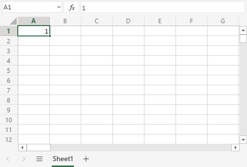

Microsoft Excel Tutorial
A maneira mais fácil de começar a usar o Excel é usar o Office 365. O Office 365 não requer o download e a instalação do programa. Ele simplesmente é executado em seu navegador. Em nosso tutorial usaremos o Office 365, que pode ser acessado a partir de www.office.com.

Depois de entrar no aplicativo Excel, clique no botão Nova pasta de trabalho em branco para começar com uma nova pasta de trabalho.

Digite um nome para sua pasta de trabalho e pressione o botão Enter:

visão geral do Excel. A estrutura do Excel é feita de duas peças, a Fita e a Folha.

Revisão
A Faixa de Opções explicada A Faixa de Opções fornece atalhos para comandos do Excel. Um comando é uma ação que permite que você faça algo acontecer. Isso pode ser, por exemplo: inserir uma tabela, alterar o tamanho da fonte ou alterar a cor de uma célula. A Fita pode parecer lotada e difícil de entender no início. Não se assuste, vai ficar mais fácil de navegar e usar à medida que você aprende mais. Na maioria das vezes, tendemos a usar as mesmas funcionalidades novamente. A Faixa de Opções é composta pelo Iniciador de Aplicativos, Guias, Grupos e Comandos. Nesta seção, explicaremos as diferentes partes da Faixa de Opções.
A Planilha é um conjunto de linhas e colunas. Ele forma o mesmo padrão que temos nos cadernos de exercícios de matemática, as caixas de retângulo formadas pelo padrão são chamadas de células. Os valores podem ser digitados nas células. Os valores podem ser números e letras:>
Vamos destrinchar isso e explicar com um exemplo Dê uma olhada na imagem abaixo. Olá mundo foi digitado na célula . A referência pode ser encontrada clicando na célula relevante e vendo a referência na caixa Nome à esquerda, que informa que a referência da célula é .C4C4
Outra maneira de encontrar a referência é primeiro encontrar a coluna, neste caso, em seguida, mapeá-la em direção à linha, neste caso, o que nos dá a referência de .C4C4 Nota: A referência da célula são suas coordenadas. Por exemplo, tem as coordenadas de coluna e linha . Você encontra a célula na interseção dos dois. A letra é sempre a coluna e o número é sempre a linha.C4C4

Várias folhas Você começa com uma planilha por padrão ao criar uma nova pasta de trabalho. Você pode ter muitas planilhas em uma pasta de trabalho. Novas folhas podem ser adicionadas e removidas. As planilhas podem ser nomeadas para facilitar o trabalho com conjuntos de dados. Você está pronto para o desafio? Vamos criar duas novas folhas e dar-lhes nomes úteis. Primeiro, clique no ícone de mais, mostrado na imagem abaixo, crie duas novas folhas:
Em terceiro lugar, insira nomes úteis para as três folhas:

Neste exemplo, usamos os nomes Data Visualization, Data Structure e Raw Data. Essa é uma estrutura típica quando você está trabalhando com dados. Muito bom trabalho! Agora você criou sua primeira pasta de trabalho com três folhas nomeadas!
Como preencher
O preenchimento é feito selecionando uma célula, clicando no ícone de preenchimento e selecionando o intervalo usando arrastar e marcar enquanto mantém pressionado o botão esquerdo do mouse. O ícone de preenchimento é encontrado no canto inferior direito da célula e tem o ícone de um pequeno quadrado. Depois de passar o mouse sobre ele, o ponteiro do mouse mudará seu ícone para uma cruz fina.

lique no ícone de preenchimento e mantenha pressionado o botão esquerdo do mouse, arraste e marque o intervalo que deseja cobrir. Neste exemplo, a célula foi selecionada e o intervalo foi marcado.A1A1:A10
este exemplo, a célula foi selecionada e o intervalo foi marcado.A1A1:A10

Agora que aprendemos a preencher. Vamos ver como copiar com a função de preenchimento.
Preencher Cópias
O enchimento pode ser usado para cópia. Ele pode ser usado para números e palavras. Vamos dar uma olhada nos números primeiro. Neste exemplo, digitamos o valor :A1(1)
O preenchimento do intervalo cria dez cópias de 1:A1:A10
O mesmo princípio vale para o texto. Neste exemplo, digitamos .A1(Hello World) Preenchendo o intervalo cria dez cópias de "Hello World":A1:A10

Fórmulas
Uma fórmula no Excel é usada para fazer cálculos matemáticos. As fórmulas sempre começam com o sinal de igual () digitado na célula, seguido pelo cálculo.= Fórmulas podem ser usadas para cálculos como: =1+1 =2*2 =4/2=2 Ele também pode ser usado para calcular valores usando células como entrada. Vejamos um exemplo. Digite ou copie os seguintes valores:

Agora queremos fazer um cálculo com esses valores. Passo a passo: Selecione e digite (C1=) Clique com o botão esquerdo do mouse A1 Tipo (+) Clique no botão esquerdo do mouseA2 Pressione Enter


Você calculou.A1(2) + A2(4) = C1(6)